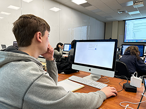
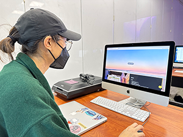
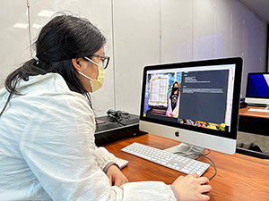

I have conducted user test with three classmates from DES157A class. The following articles were the research result.
User Tester 1: Kristian
- Focused on reading the word contents first, before viewing the image (noticed from the eye/head movement)
- Thought it was clean and put well together
- Did not like the hover feature that made the screen dim and light
- Said that the "scroll down" button was confusing because it was not consistent throughout the page

User Tester 2: Emily
- Did not use the "scroll down" button at the beginning
- Liked the alternating positions of the word contents and the images
- Liked the "top" button because it allowed her to move back to top of the page more easily
- Suggested to make each sections highlight based on the page location, not hover

User Tester 3: Erica
- Liked the dim-bright changes in different sections
- Liked how word contents were next to each other while showing the background (it sets the tone well)
- The small gap that is either on left or right of the word contents make it look like it has issues with viewport

Common Findings
- "scroll down" and "top" buttons were easy to understand
- Liked the ripped effect of each photos (they said it made the contrast better from the background)
- The image was in an awkward position, covering parts of the word contents
Future Improvements
- There were mixed opinion about having the screen go dim or bright, so I might either change how the effect is applied or the color of the effect
- The image was not positioned properly, so I would need to work on positioning the image